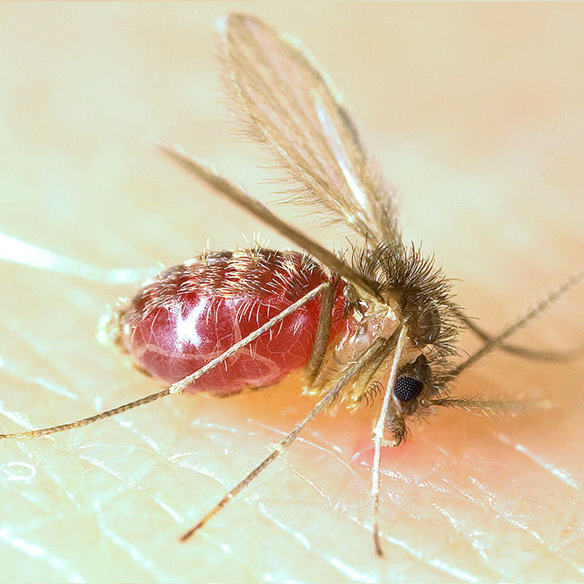

Visceral leishmaniasis

-
There are 3 main forms of leishmaniases: visceral (the most serious form
because it is almost always fatal without treatment), cutaneous (the
most common, usually causing skin ulcers), and mucocutaneous (affecting
mouth, nose and throat).
-
Leishmaniasis is caused by protozoan parasites which are transmitted by
the bite of infected female phlebotomine sandflies.
-
The disease affects some of the world’s poorest people and is associated
with malnutrition, population displacement, poor housing, a weak immune
system and lack of financial resources.
-
An estimated 700 000 to 1 million new cases occur annually. Only a small
fraction of those infected by parasites causing leishmaniasis will
eventually develop the disease.
This text is from the
World Health Organisation